1. Prima di cominciare
1.1 Che cos'è il Sistema Consegne
Serve a tenere le consegne del reparto: una scheda per ogni letto, uguale su tutti i PC.
- Quello che scrivi su un PC compare sugli altri dopo pochi secondi.
- Ogni scheda ha le colonne «Diagnosi», «Problemi attivi», «Esami», «Da fare», «Diaria ed epicrisi» e «Note e terapia».
- Il programma salva da solo: non c'è un pulsante «Salva» da ricordarsi.
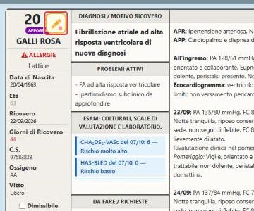
1.2 Da dove si apre
Il programma si apre dal browser, sui PC del reparto e anche dal telefono.
- Apri il segnalibro delle consegne che trovi nel browser del reparto: porta da solo all'indirizzo giusto.
- Dal telefono funziona allo stesso modo: il menu si apre con il pulsante a tre righe in alto.
Attenzione: non salvare la pagina in altri modi. Usa sempre il segnalibro o l'indirizzo qui sopra.
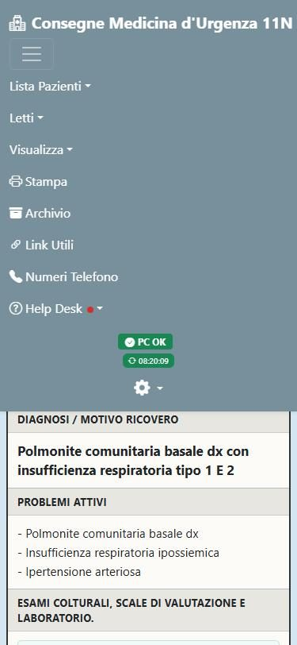
1.3 Entrare: «Accedi con Google»
Si entra con l'account Google del reparto, una volta per ogni PC.
- Premi «Accedi con Google».
- Scegli l'account del reparto, quello scritto sopra il pulsante.
- Le consegne compaiono da sole. La volta dopo il PC è già collegato.
Attenzione: entra solo con l'account del reparto. Un altro account viene rifiutato.
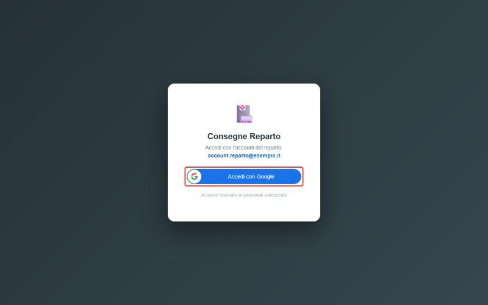
1.4 La schermata principale
In alto c'è la barra dei menu, sotto le schede dei letti una dopo l'altra.
- A sinistra: «Lista Pazienti», «Letti», «Visualizza», «Stampa», «Archivio», «Link Utili», «Numeri Telefono», «Help Desk».
- A destra: la spia «PC OK», l'ora dell'ultimo aggiornamento e la rotellina delle impostazioni.
- Toccando il nome delle consegne, in alto a sinistra, la pagina rilegge i dati.
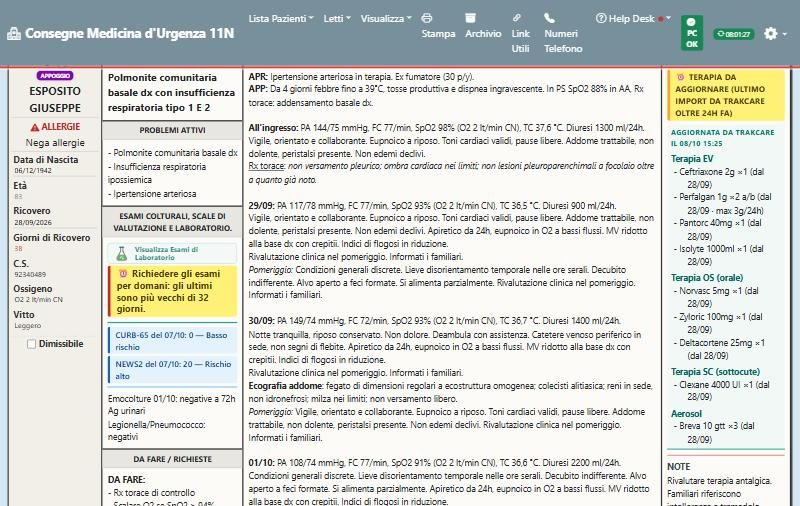
1.5 «Lista Pazienti»
Mostra tutti i letti con il paziente e la tipologia, per arrivare subito alla scheda giusta.
- Premi «Lista Pazienti» nella barra in alto.
- Tocca un letto: la pagina scorre fino alla sua scheda.
Le icone accanto al nome indicano isolamento, dimissione e indicazioni di rianimazione.
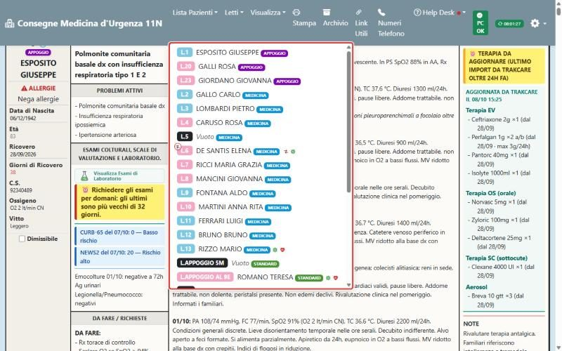
1.6 Il riepilogo dei letti
Conta i letti per sesso, per tipologia e per stato.
- Premi «Letti» nella barra in alto.
- In fondo al menu, sotto «Riepilogo Letti», trovi i conti: letti vuoti, in dimissione, in isolamento, con note di rianimazione.
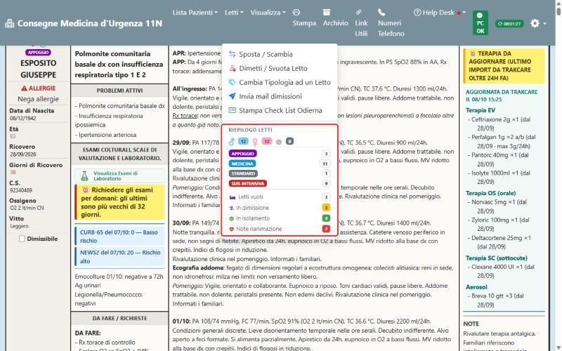
1.7 Che versione ho?
Serve quando segnali un problema: dice quale versione del programma usa il tuo PC.
- Premi la rotellina in alto a destra.
- In fondo al menu leggi «Versione applicazione»: è un numero, per esempio 213.
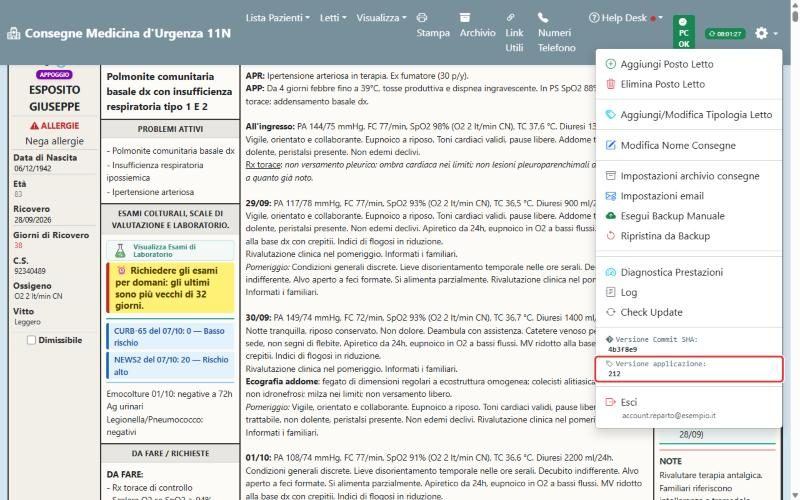
2. Scrivere nelle schede
2.1 Aprire una scheda in modifica
Le schede si leggono sempre; per scriverci si apre la scheda in modifica.
- Passa con il mouse sulla scheda: accanto al numero del letto compare la matita gialla.
- Premi la matita: la scheda si apre a tutto schermo, con una barra di pulsanti in ogni colonna.
- Scrivi nelle colonne come in un documento.
- Per chiudere tocca fuori dalla scheda, nella parte scura.
Attenzione: dopo 5 minuti senza toccare nulla la scheda si chiude e salva da sola.
Nome, allergie, date, codice sanitario e sesso stanno nella colonna di sinistra: vedi da 2.10 a 2.13.
2.2 Il salvataggio
Quello che scrivi si salva da solo, pochi secondi dopo che hai smesso di scrivere.
- Il pulsante con il dischetto, in alto a sinistra della scheda aperta, è «Salva ora»: salva subito.
- Quando chiudi la scheda il programma salva comunque le ultime modifiche.
Attenzione: non chiudere il browser mentre stai ancora scrivendo; prima chiudi la scheda.
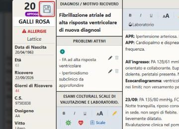
2.3 Quando un collega sta scrivendo
Una scheda la modifica un PC alla volta, così due colleghi non si cancellano il lavoro.
- Se un altro PC ha la scheda aperta, sugli altri compare «In aggiornamento» con il lucchetto.
- Aspetta che il collega chiuda la scheda: il lucchetto sparisce da solo.
- Se il collega se ne dimentica, dopo 10 minuti senza modifiche la scheda torna libera.
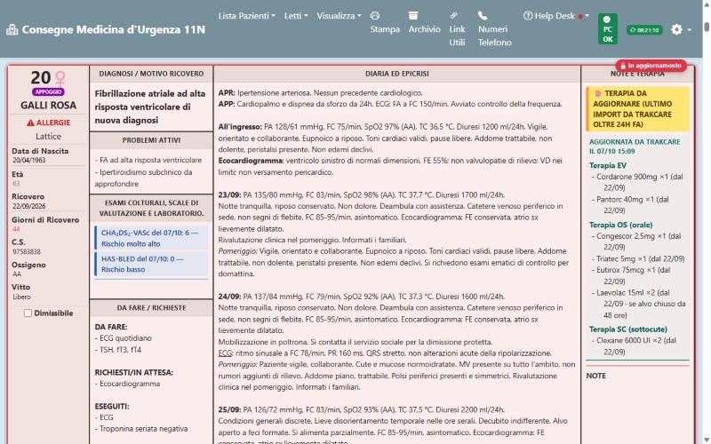
2.4 Grassetto, corsivo, sottolineato, dimensione, evidenzia
Servono a mettere in risalto una parte del testo.
- Con la scheda aperta, seleziona la parola o la frase.
- Nella barra della colonna premi B (grassetto), I (corsivo) o U (sottolineato).
- «AA» cambia la dimensione del testo; l'evidenziatore giallo colora lo sfondo, con «Rimuovi evidenziazione» per toglierlo.
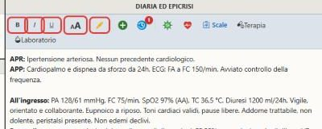
2.5 «Aggiungi data odierna»
Scrive la data di oggi, così ogni nota ha il suo giorno.
- Metti il cursore dove vuoi scrivere.
- Premi il «+» verde nella barra della colonna.
- Nella «Diaria» compare la data in grassetto, per esempio «05/11:». In «Esami» e «Da fare» compare anche una casella da spuntare quando la cosa è fatta.
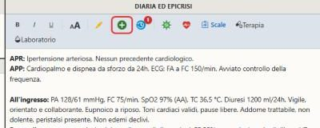
2.6 Recuperare un testo perso
Se hai cancellato qualcosa per sbaglio, puoi riprendere una copia di prima della scheda.
- Con la scheda aperta premi l'orologio blu, «Recupera dati da snapshot precedente».
- Scorri le copie salvate su questo PC: ognuna ha giorno e ora.
- Premi «Ripristina questo snapshot» sulla copia giusta, oppure «Annulla».
Attenzione: il ripristino sostituisce il testo attuale della scheda con quello della copia.
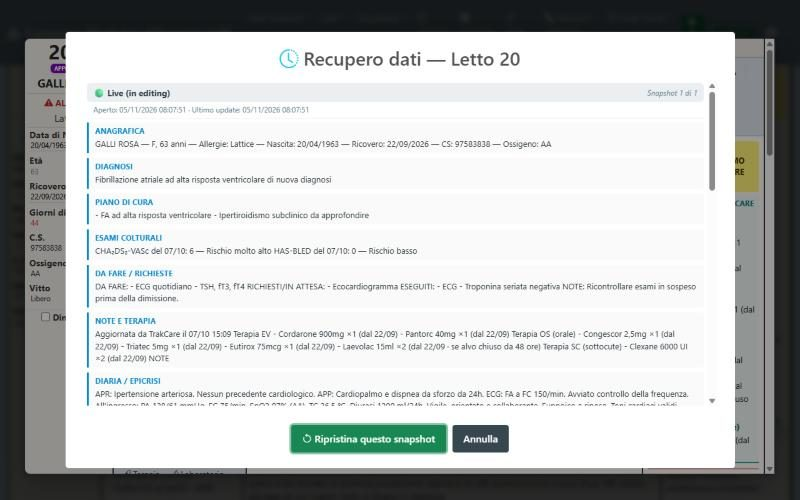
2.7 Isolamento
Segnala un paziente in isolamento, con il tipo di isolamento.
- Con la scheda aperta premi l'icona verde del virus nella barra della «Diaria».
- Scrivi il tipo, per esempio «da contatto» o «droplet», e premi «Attiva isolamento».
- In cima alla «Diaria» compare il riquadro dell'isolamento, e il virus accanto al numero del letto.
- Per toglierlo tocca il riquadro con la scheda aperta.
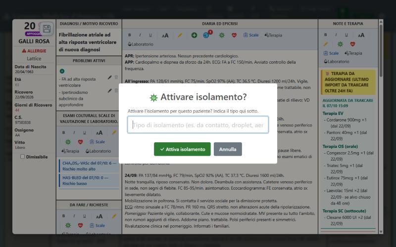
2.8 Indicazioni di rianimazione
Annota se il paziente è da rianimare oppure no, con le eventuali note.
- Con la scheda aperta premi il cuore rosso nella barra della «Diaria».
- Scrivi l'indicazione, per esempio «DA RIANIMARE» oppure «NON RIANIMARE (DNR)».
- Premi «Salva»: l'indicazione resta in cima alla «Diaria».
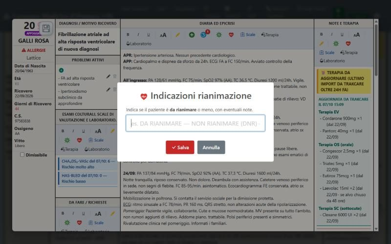
2.9 «Dimissibile»
Segna il paziente in dimissione, con la data prevista.
- Con la scheda aperta tocca la casella «Dimissibile», sotto i dati del paziente.
- Scrivi la data in qualsiasi forma (150526, 15/05/26…) oppure una parola come «possibile».
- Premi «Conferma». Il paziente compare fra le dimissioni della mail e del riepilogo.
Attenzione: con la scheda chiusa la casella non si cambia; il programma te lo ricorda.
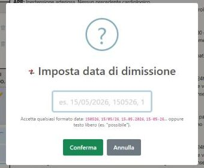
2.10 Nome e allergie
I dati del paziente stanno nella colonna di sinistra della scheda, sotto il numero del letto.
- Apri la scheda in modifica (2.1).
- Sotto il numero del letto scrivi cognome e nome, come in TrakCare (per esempio «ROSSI MARIO»).
- Sotto «Allergie» scrivi le allergie note, oppure «Nega allergie».
Attenzione: l'importazione di terapia ed esami controlla che il nome sia lo stesso di TrakCare (5.2).
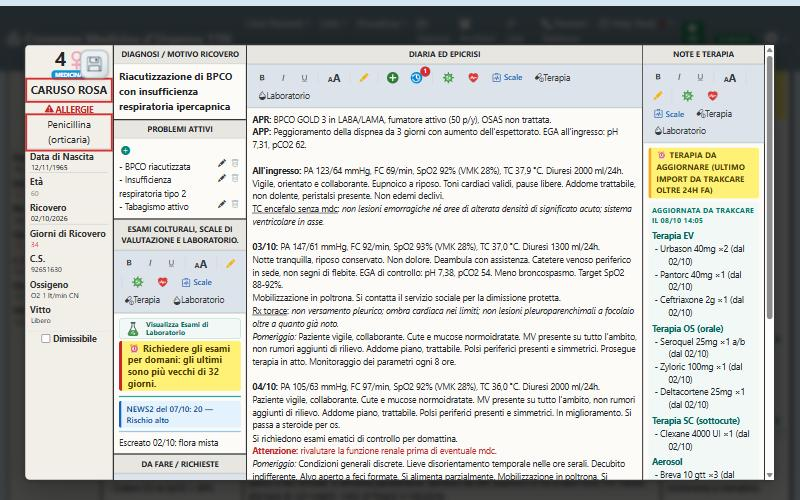
2.11 Data di nascita ed età
- A scheda aperta tocca «Data di Nascita» e scrivi solo le cifre: le barre si mettono da sole (12111965 diventa 12/11/1965).
- Va bene anche l'anno a due cifre (121165).
- Esci dal campo: l'età si calcola da sola e non si può cambiare a mano.
Senza data di nascita, l'età si può scrivere a mano. Una data che non esiste diventa rossa, con il motivo.
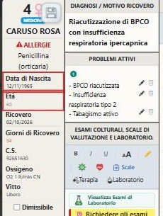
2.12 Ricovero, codice sanitario, ossigeno e vitto
- «Ricovero»: la data del ricovero, scritta come quella di nascita. «Giorni di Ricovero» si conta da solo.
- «C.S.»: il codice sanitario del paziente.
- «Ossigeno»: per esempio «CN 4 lt/min»; «Vitto»: per esempio «completo», «diabetico», «senza scorie».
Tutti si scrivono a scheda aperta e si salvano da soli (2.2).
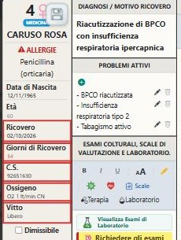
2.13 Il sesso del paziente
L'iconcina accanto al numero del letto dice il sesso del paziente.
- Apri la scheda in modifica.
- Clicca sull'iconcina accanto al numero del letto: a ogni clic passa a maschio (♂ azzurro), femmina (♀ rosa), niente (⊘ grigio), e di nuovo da capo.
«Niente» è lo stato di partenza: un letto svuotato (4.1) torna sempre a «niente». Il sesso conta nel riepilogo dei letti (1.6) e colora il numero del letto in «Lista Pazienti».
Attenzione: con la scheda chiusa il clic sull'iconcina non fa nulla.
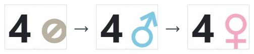
3. I Problemi Attivi
3.1 Aggiungere un problema
«Problemi attivi» è un elenco puntato: si riempie solo con i pulsanti, così resta in ordine.
- Apri la scheda in modifica.
- Nella colonna «Problemi attivi» premi il «+» verde.
- Scrivi il problema, per esempio «Scompenso cardiaco», e premi «Aggiungi».
Attenzione: in questa colonna non si scrive a mano e non si incolla: usa sempre il «+».
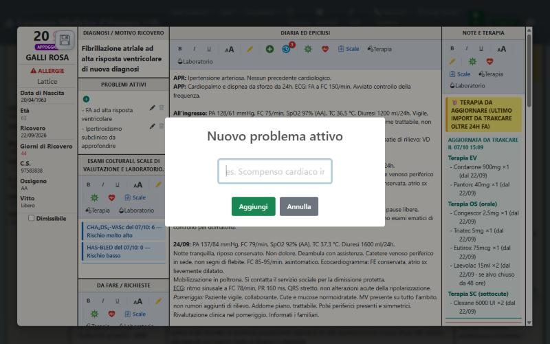
3.2 Modificare o togliere un problema
Ogni riga ha i suoi due pulsanti.
- Apri la scheda in modifica.
- Accanto alla riga premi la matita per correggerla, oppure il cestino per toglierla.
- Conferma nella finestra che compare.
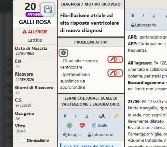
4. I letti
4.1 Dimettere o svuotare un letto
Libera il letto quando il paziente va via.
- Menu «Letti» → «Dimetti / Svuota Letto».
- Scegli il letto e premi «Dimetti».
- Conferma con «Sì, svuota». La scheda resta vuota, pronta per un nuovo paziente.
Attenzione: il contenuto non si recupera dalla scheda; resta solo nei backup dell'«Archivio».
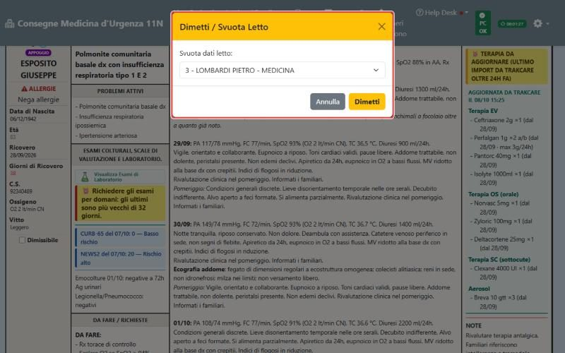
4.2 Spostare o scambiare due pazienti
Porta un paziente in un altro letto, con tutta la sua scheda ed i suoi esami.
- Menu «Letti» → «Sposta / Scambia».
- Scegli il «Letto di Origine» e il «Letto di Destinazione», poi premi «Sposta».
- Se la destinazione è vuota conferma con «Sì, sposta».
- Se è occupata, i due pazienti si scambiano: conferma con «Sì, scambia».
Attenzione: se uno dei due letti è aperto in modifica su un altro PC, lo spostamento aspetta.
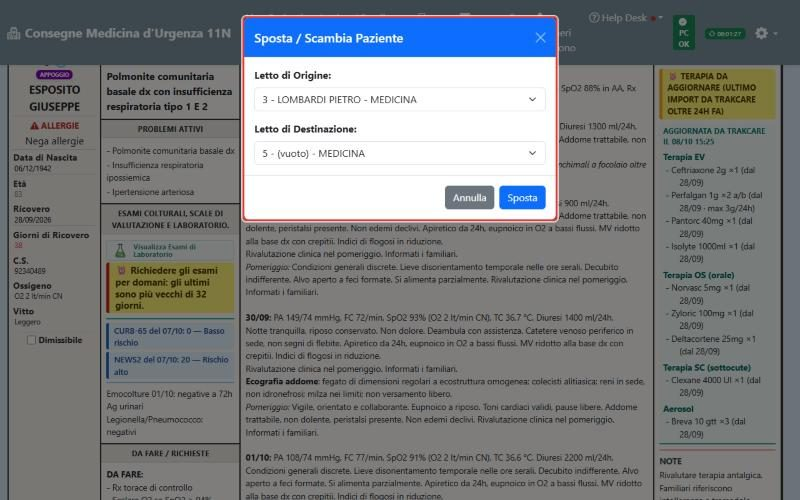
4.3 Cambiare la tipologia di un letto
La tipologia (per esempio «Medicina» o «Appoggio») colora il letto e serve a ordinare e stampare.
- Dal menu: «Letti» → «Cambia Tipologia ad un Letto», scegli il letto e la nuova tipologia, poi premi «Applica».
- Dalla scheda: aprila in modifica (2.1) e clicca sulla tipologia scritta sotto il numero del letto. Si apre la stessa finestra, con il letto già scelto: nel menu a tendina «Nuova Tipologia» scegli fra le tipologie configurate (4.5) e premi «Applica».
Dopo «Applica» dalla scheda, la scheda si chiude e salva da sola.
Attenzione: a scheda chiusa il clic sulla tipologia non fa nulla.
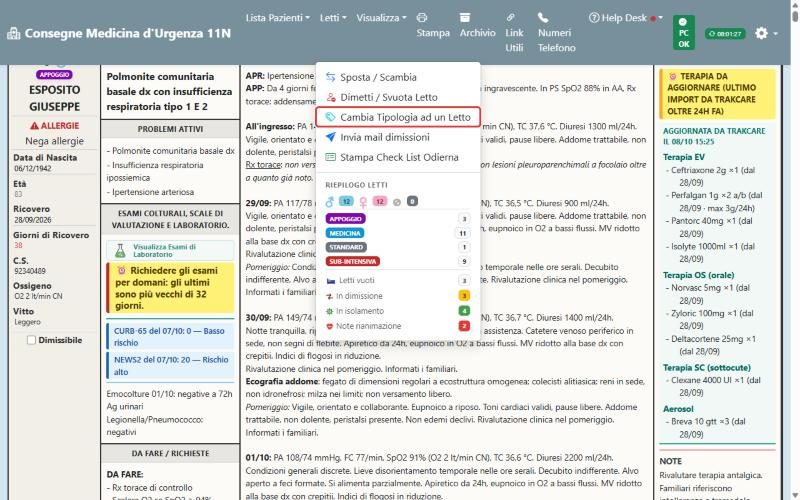
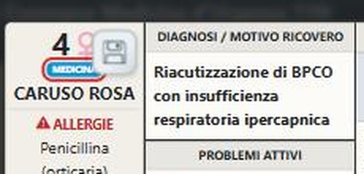
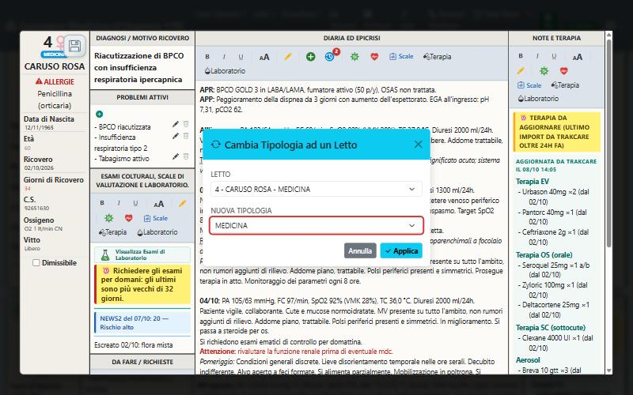
4.4 Aggiungere o eliminare un posto letto
Cambia il numero dei letti delle consegne.
- Rotellina → «Aggiungi Posto Letto»: scrivi il numero o il nome del letto e premi «Aggiungi».
- Rotellina → «Elimina Posto Letto»: scegli il letto e premi «Elimina», poi «Sì, elimina».
Attenzione: eliminare un letto lo toglie del tutto, scheda compresa. Usalo solo per i letti che non ci sono più.
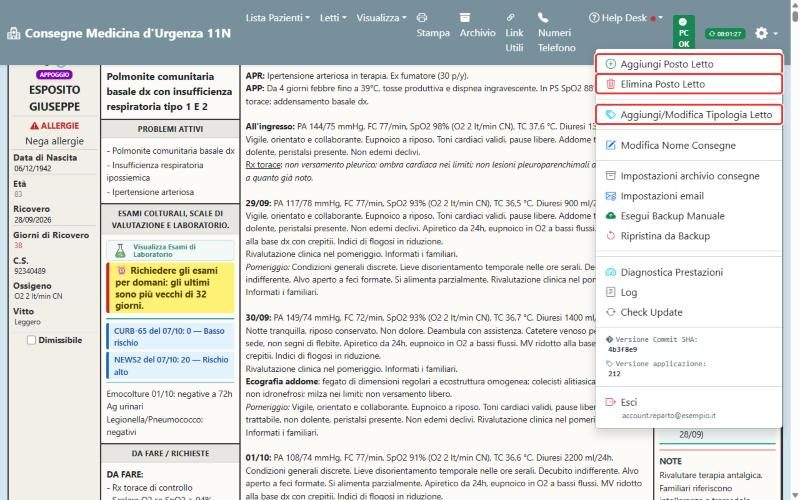
4.5 Le tipologie dei letti
Crea una tipologia nuova o cambia nome e colore a una esistente.
- Rotellina → «Aggiungi/Modifica Tipologia Letto».
- Modifica le tipologie, oppure premi «Aggiungi nuova tipologia».
- Premi «Salva modifiche». Se chiudi senza salvare, il programma te lo chiede.
4.6 Ordinare i letti
Cambia l'ordine delle schede sullo schermo.
- Menu «Visualizza».
- Scegli «Numero Letto», «Ordine Alfabetico» oppure «Tipologia Letto».
L'ordine scelto vale anche per la stampa, su questo PC.
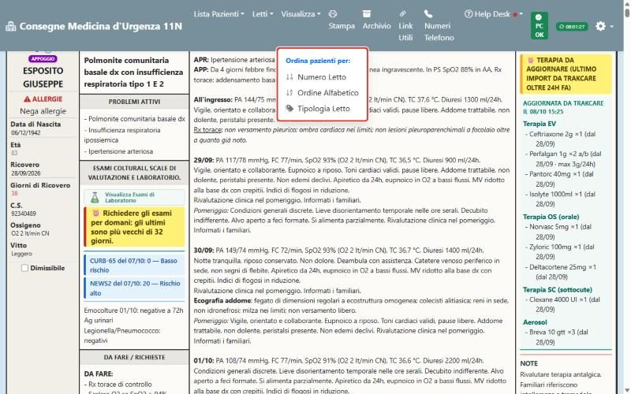
4.7 Il nome delle consegne
Cambia il titolo che compare in alto e nelle stampe.
- Rotellina → «Modifica Nome Consegne».
- Scrivi il nuovo nome e premi «Salva».
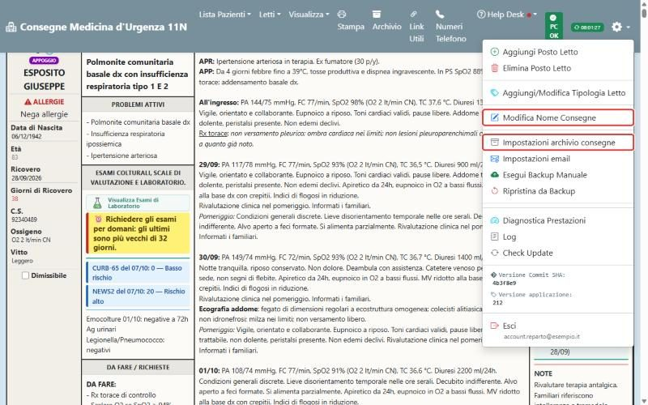
5. Dati da TrakCare
5.1 Il segnalibro «Prendi Terapia Trak»
È un pulsante nella barra dei preferiti che legge la terapia da TrakCare. Si mette una volta per PC.
- Se non vedi la barra dei preferiti, premi Ctrl + Maiusc + B.
- Apri una scheda in modifica e premi «Terapia»: se il pulsante non c'è ancora, la finestra lo mostra.
- Trascina il pulsante verde «Prendi Terapia Trak» nella barra dei preferiti.
Attenzione: se il programma ti chiede di trascinarlo di nuovo, fallo: il segnalibro vecchio non funziona più.
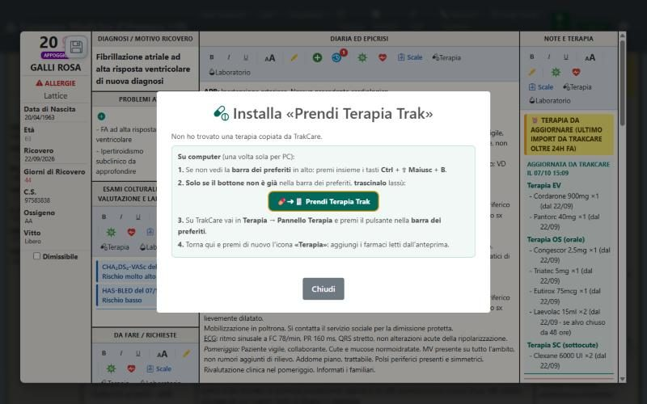
5.2 Importare la terapia
Copia nella colonna «Note e terapia» la terapia in corso su TrakCare, divisa per via (EV, OS, SC…).
- Su TrakCare apri il paziente: «Terapia» → «Pannello Terapia».
- Premi il pulsante «Prendi Terapia Trak» nella barra dei preferiti.
- Torna nelle consegne, apri la scheda dello stesso paziente e premi «Terapia».
- Controlla l'anteprima e conferma i farmaci da aggiungere.
Attenzione: il programma controlla che il nome del paziente sia lo stesso. TrakCare resta il riferimento: la terapia nelle consegne è una copia.
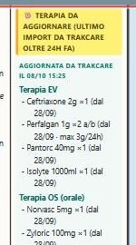
5.3 Gli esami: l'alambicco e il promemoria
Nella colonna degli esami di ogni scheda c'è il riquadro del laboratorio.
- «Visualizza Esami di Laboratorio», con l'alambicco, apre gli esami del paziente.
- Il riquadro giallo «Richiedere gli esami per domani» ricorda che gli ultimi esami sono vecchi.
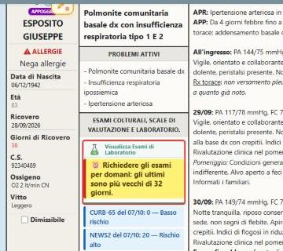
5.4 La finestra degli esami e i grafici
Mostra tutti gli esami del paziente, giorno per giorno, con i valori fuori norma in rosso.
- Con la scheda aperta premi «Laboratorio», oppure l'alambicco.
- Cerca un esame con «Ricerca esame», in alto.
- Premi il piccolo grafico sotto il nome di un esame: si apre l'andamento nel tempo. «Torna alla tabella» per tornare.
- «Selezione multipla» confronta più esami in un grafico solo.
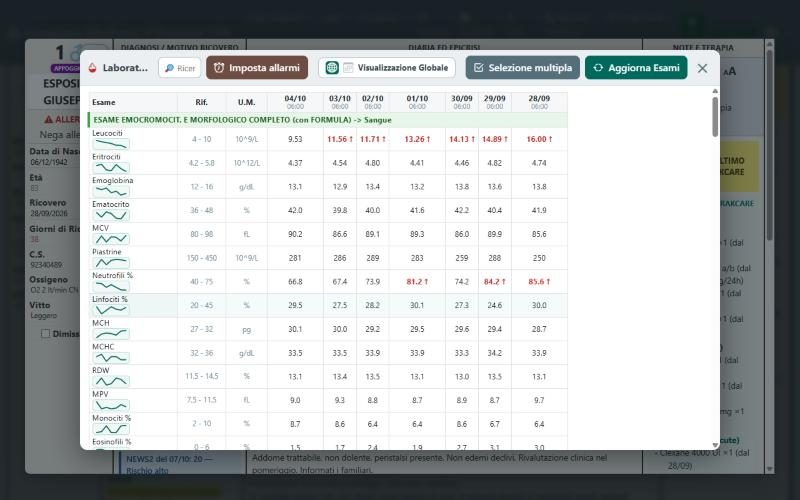
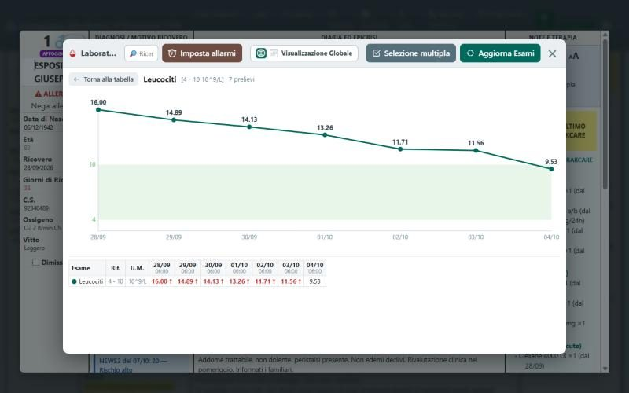
5.5 Importare gli esami
Copia gli esami da TrakCare con il segnalibro «Prendi Esami Trak».
- La prima volta trascina «Prendi Esami Trak» nella barra dei preferiti (lo mostra la finestra degli esami).
- Su TrakCare apri il paziente e vai in «Laboratorio».
- Premi il pulsante nella barra dei preferiti e aspetta «Esami copiati».
- Torna nelle consegne e premi «Aggiorna Esami».
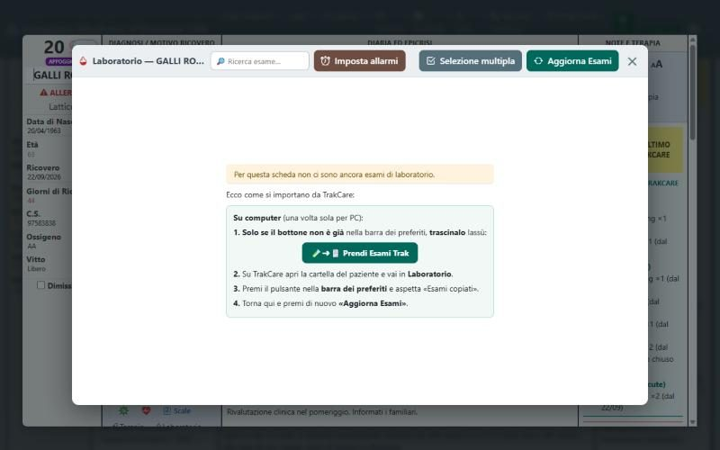
5.6 «Imposta allarmi»
Decide dopo quanti giorni compare il promemoria per richiedere gli esami.
- Nella finestra degli esami premi «Imposta allarmi».
- Scegli i giorni (1, 2, 3, 5, 7 o un altro numero) e premi «Salva».
- «Usa predefinito» torna al valore della tipologia del letto.
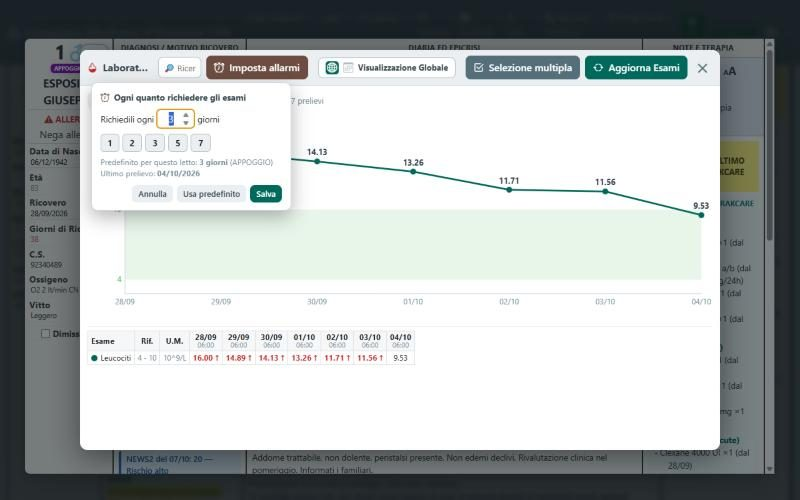
6. Le scale di valutazione
6.1 Aprire una scala
Una calcolatrice di scale cliniche (CHA₂DS₂-VASc, HAS-BLED, Wells, qSOFA…).
- Apri la scheda in modifica e premi «Scale».
- Cerca la scala per nome, oppure scorri l'elenco diviso per argomento.
- Tocca la scala che ti serve.
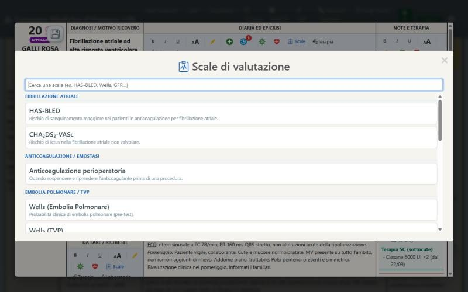
6.2 Compilare e mettere il punteggio nella scheda
Il punteggio si calcola mentre scegli le risposte.
- Rispondi a ogni voce con i pulsanti («No», «Sì +1»…).
- Leggi il punteggio e il suo significato in fondo.
- Premi «Inserisci in consegna»: nella scheda compare un riquadro azzurro con scala, data e risultato.
«Quando usare», «Perché usare» e «Insidie e note» spiegano la scala.
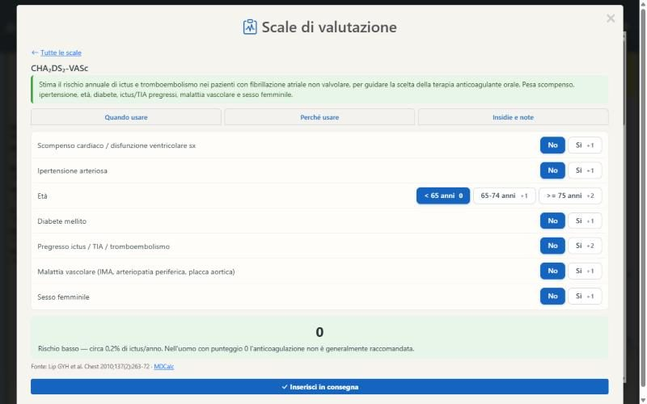
7. La mail di dimissione
7.1 Inviare la mail delle dimissioni
Manda a chi organizza i letti l'elenco delle dimissioni previste per domani.
- Menu «Letti» → «Invia mail dimissioni».
- Controlla i destinatari e l'oggetto.
- Spunta i pazienti da includere: quelli con la data gialla sono segnati «Dimissibile».
- Rileggi l'anteprima: quello che vedi è quello che parte. Premi «Invia» e conferma.
Attenzione: la mail contiene nomi di pazienti. Controlla bene i destinatari prima di inviare.
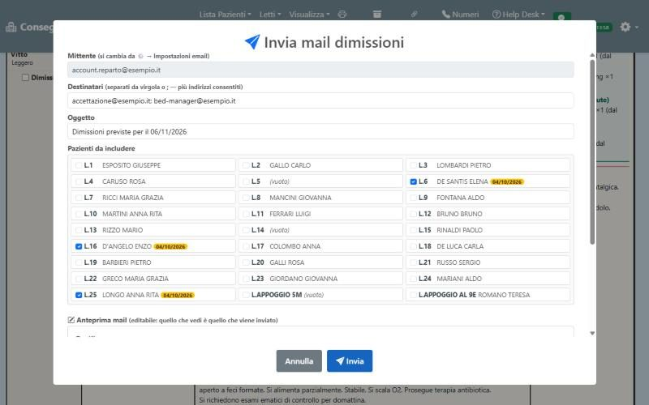
7.2 «Impostazioni email» e «Autorizza Google»
Decide da quale casella parte la mail. Si fa una volta e vale per tutti i PC.
- Rotellina → «Impostazioni email».
- Scrivi l'indirizzo della casella Google del reparto e premi «Salva».
- Se in alto compare il pulsante giallo «Autorizza Google», premilo ed entra con quella casella: serve una volta sola.
Attenzione: usa solo una casella del reparto: una copia di ogni mail resta nella sua posta inviata.
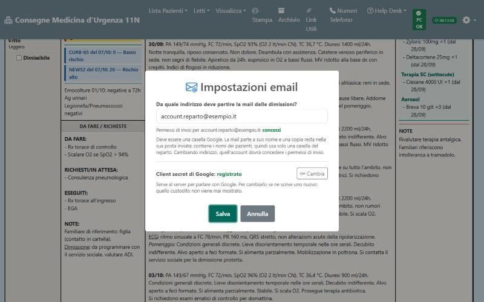
8. Numeri Telefono
8.1 Cercare un numero e chiamare
La rubrica dei numeri dell'ospedale, dentro le consegne.
- Premi «Numeri Telefono» nella barra in alto: la rubrica si apre a destra.
- Scrivi nella ricerca un nome o un numero, oppure tocca una categoria.
- «A – Z» mostra le iniziali; «Mostra Tutti» torna all'elenco intero.
- Dal telefono tocca il numero per chiamare.
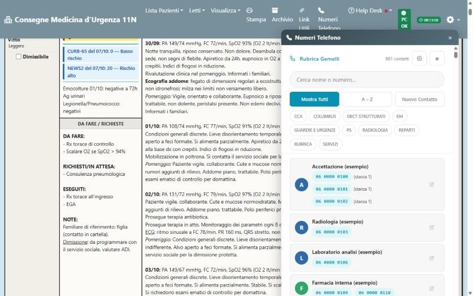
8.2 Aggiungere, modificare, eliminare un contatto
La rubrica è di tutto il reparto: un contatto aggiunto lo vedono tutti.
- Premi «Nuovo Contatto», oppure la matita accanto a un contatto.
- Scrivi nome, categoria e numeri; «+ Aggiungi numero» per averne più di uno, con una nota.
- Premi «Salva». Per eliminare apri il contatto e premi «Elimina».
Attenzione: se un collega ha cambiato lo stesso contatto nel frattempo, il programma te lo dice e non salva.
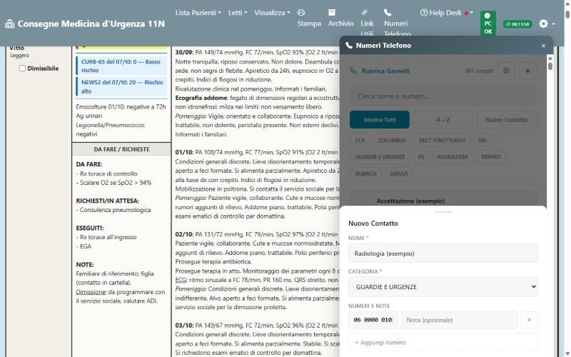
8.3 Le categorie e l'esportazione
Le categorie raggruppano i contatti; l'esportazione ne fa una copia in un file.
- Premi la rotellina della rubrica, «Gestione categorie».
- Cambia nome, trascina per riordinare, oppure aggiungine una in «Nuova categoria».
- Premi «Salva modifiche». «Esporta tutto in CSV» scarica l'elenco in un file per Excel.
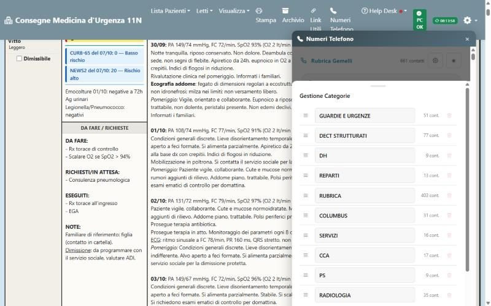
8.4 Il tema chiaro o scuro
Cambia i colori della rubrica, per esempio di notte sul telefono.
- Nella rubrica premi il sole (o la luna), in alto a destra.
- La scelta resta su quel dispositivo.
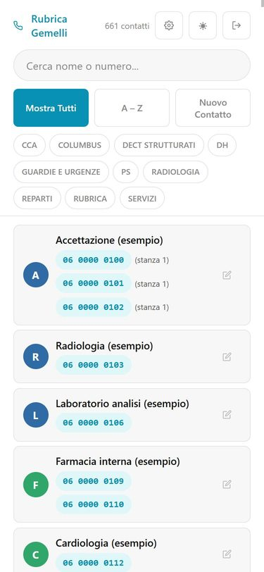
8.5 La rubrica dal telefono
Dal telefono si può aprire solo la rubrica, senza le consegne.
- Apri l'icona «Numeri Telefono» sul telefono (vedi 8.6).
- La prima volta premi «Accedi con Google» con l'account del reparto.
- Per uscire premi l'icona con la freccia, in alto a destra.
Attenzione: uscendo dalla rubrica esci anche dalle consegne su quel telefono.
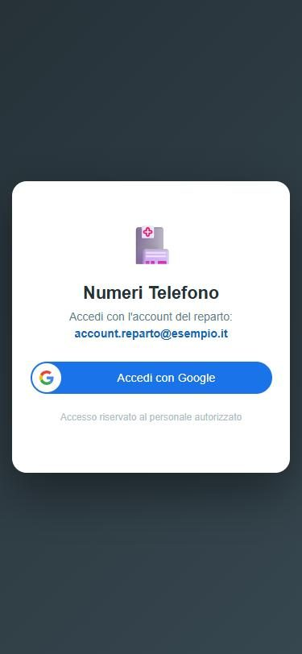
8.6 Installare l'icona «Numeri Telefono»
Mette sul telefono un'icona che apre subito la rubrica.
- Apri con il telefono l'indirizzo delle consegne seguito da ?rubrica=1, ed entra.
- iPhone (Safari): premi Condividi, poi «Aggiungi alla schermata Home».
- Android (Chrome): premi i tre puntini, poi «Installa app» o «Aggiungi a schermata Home».
- Sulla schermata del telefono compare l'icona «Numeri Telefono».
9. Stampare
9.1 «Stampa»: le consegne su carta
Stampa le schede di tutti i letti, o solo di alcune tipologie.
- Premi «Stampa» nella barra in alto.
- Scegli la dimensione (100%, 90%, 80%…) e le tipologie da stampare.
- Lascia spuntato «Non stampare letti vuoti»; «Includi scheda NOTE» aggiunge la colonna delle note.
- Premi «Stampa»: si apre una pagina nuova con l'anteprima.
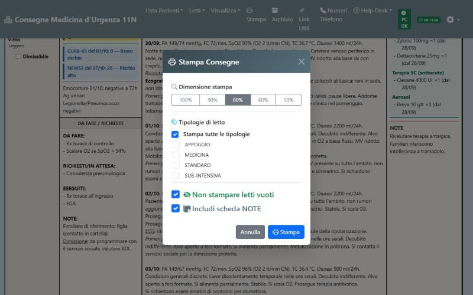
9.2 L'anteprima e il PDF
Nell'anteprima vedi le schede come verranno sulla carta.
- Premi «Stampa / Salva PDF», in alto a destra.
- Scegli la stampante, oppure «Salva come PDF».
- «Torna all'app» chiude l'anteprima.
Attenzione: un foglio stampato contiene dati dei pazienti: non lasciarlo in giro.
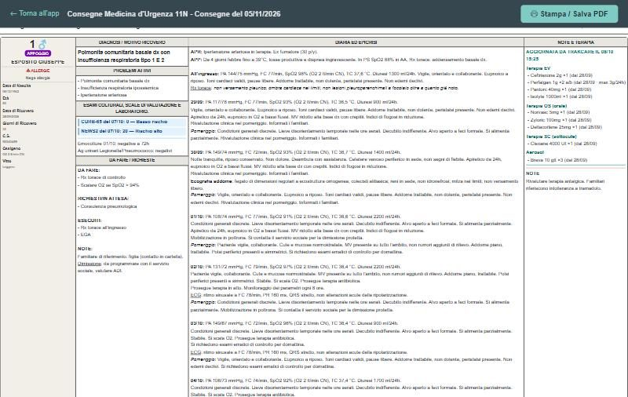
9.3 «Stampa Check List Odierna»
Stampa la lista delle cose da fare di oggi, letto per letto.
- Menu «Letti» → «Stampa Check List Odierna».
- Scegli «Verticale» o «Orizzontale».
- Scegli «Tutti», una tipologia, oppure i singoli letti, e premi «Stampa».
Attenzione: se compare «Popup bloccato», consenti le finestre a comparsa per questo sito nel browser e riprova.
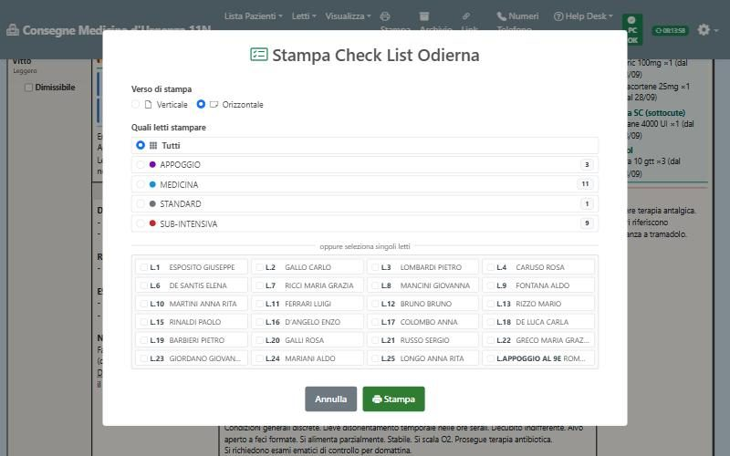
10. Archivio e backup
10.1 «Archivio»: le consegne dei giorni passati
Il programma copia da solo tutte le consegne una volta all'ora. Le copie si rileggono e si stampano.
- Premi «Archivio» nella barra in alto.
- Nel calendario i giorni verdi hanno delle copie: tocca il giorno.
- Scegli l'ora della copia: si apre la stampa delle consegne di quel momento.
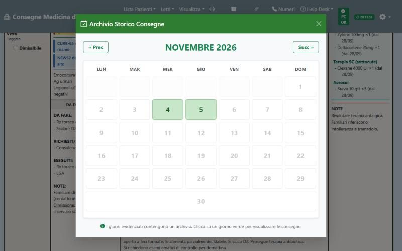
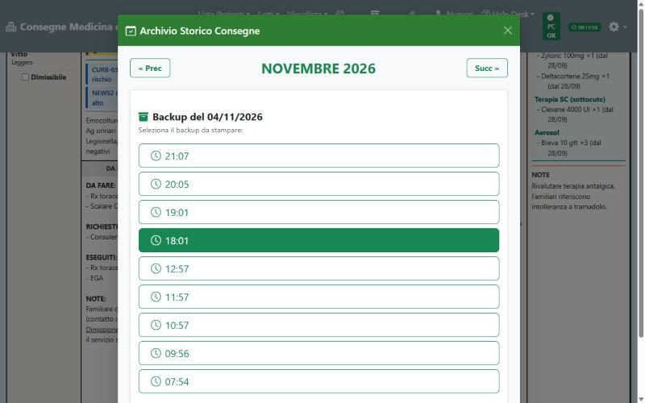
10.2 «Esegui Backup Manuale»
Fa subito una copia in più, per esempio prima di un grosso cambiamento.
- Rotellina → «Esegui Backup Manuale».
- Premi «Esegui Backup». La copia compare nell'«Archivio» con l'ora di adesso.
10.3 «Ripristina da Backup»
Rimette le schede com'erano in una copia passata: tutte, o solo alcuni letti.
- Rotellina → «Ripristina da Backup».
- Scegli il giorno, poi l'ora della copia.
- Spunta i letti da rimettere, oppure «Ripristina tutto».
- Premi «Ripristina selezionati» e conferma.
Attenzione: i letti ripristinati perdono quello che è stato scritto dopo quella copia. Fai prima un backup manuale.
10.4 «Impostazioni archivio consegne»
Decide per quanti giorni si conservano le copie dell'archivio.
- Rotellina → «Impostazioni archivio consegne».
- Scrivi i giorni di conservazione e premi «Salva».
Attenzione: le copie più vecchie di quei giorni si cancellano da sole e non si recuperano.
11. Help Desk
11.1 «Apri un ticket»
Serve a segnalare un problema, chiedere una funzione o fare una domanda a chi cura il programma.
- Premi «Help Desk» nella barra in alto, poi «Apri un ticket».
- Scegli «Segnala un problema», «Chiedi una funzione» oppure «Fai una domanda».
Il pallino rosso su «Help Desk» vuol dire che l'assistenza ti ha risposto. «Leggi la guida», in fondo alla finestra, apre questo manuale (12.5).
11.2 Descrivere la segnalazione
Non scrivere nomi, cognomi, date di nascita, codici fiscali o altri dati di pazienti.
- In «In poche parole» scrivi il titolo.
- Rispondi alle domande, almeno a quella obbligatoria: per un problema «Che cosa è successo invece?», per una funzione «Che problema vuoi risolvere?», per una domanda la domanda stessa.
- Premi «Avanti».
Se il testo somiglia a un dato personale il modulo te lo segnala. Se chiudi a metà, la bozza resta su questo PC per 24 ore.
11.3 Chi può vederla e l'invio
- Scegli «Solo chi l'ha aperta» oppure «Tutti gli utenti di Consegne, …», con il nome del reparto.
- Se vuoi essere richiamato, lascia nome e telefono o mail (facoltativo). Premi «Avanti».
- In «Rivedi e invia» controlla tutto e premi «Invia».
Attenzione: l'account è del reparto, quindi «solo chi l'ha aperta» vuol dire chiunque entri con quell'account. Con la segnalazione partono anche alcuni dati tecnici (versione, browser, schermo, ultimi errori dell'app: solo tipo e riga): li vedi elencati prima di inviare.
11.4 «Le mie segnalazioni»
Mostra le tue segnalazioni e quelle condivise dai colleghi, con il loro stato.
- Stati: «Ricevuta», «In lavorazione», «Serve una tua risposta», «Risolta: confermi?», «Chiusa».
- Apri una segnalazione per leggere e rispondere. «Serve una tua risposta»: rispondi entro 14 giorni, poi si chiude «senza risposta».
- Su una risolta premi «Sì, è risolta» o «No, non è risolta»; dopo 7 giorni si chiude da sola.
- «Ritira» c'è finché è «Ricevuta». Una chiusa si riapre scrivendo entro 30 giorni; se è chiusa come doppione o non valida, aprine una nuova.
- Su una tua condivisa: «Rendila privata». Su quelle dei colleghi: «Serve anche a me».
11.5 Senza rete, o con il servizio spento
- Senza rete la segnalazione resta in coda e «parte appena torna la rete»; «Riprova adesso» la manda subito.
- Una segnalazione in coda che non parte entro 24 ore si cancella.
- Dopo troppe segnalazioni in un giorno compare «riprova più tardi»: la coda riprova il giorno dopo.
- Se compare «Il servizio di assistenza non è attivo per questa installazione», per ora l'Help Desk è spento.
- «Esci» si ferma se c'è una segnalazione non inviata: inviala o eliminala da Help Desk.
12. Altre voci del menu
12.1 «Link Utili»
I collegamenti che il reparto usa spesso (TrakCare, turni, tabelle…).
- Premi «Link Utili» nella barra in alto e tocca un collegamento: si apre in una pagina nuova.
- Per aggiungerne uno scrivi nome e indirizzo in «Aggiungi link» e premi «Aggiungi».
- La matita accanto a un collegamento lo modifica.
12.2 «Check Update»
Chiede subito le impostazioni del reparto, invece di aspettare il prossimo aggiornamento.
- Rotellina → «Check Update».
- Il programma dice se è cambiato qualcosa, per esempio una funzione accesa o spenta.
12.3 «PC OK», l'ora e «Diagnostica Prestazioni»
- «PC OK» verde: il PC lavora normalmente. L'ora accanto è l'ultimo aggiornamento ricevuto.
- Se il PC è lento, la spia diventa «PC LENTO» o «Polling ON»: vedi 13.4.
- Rotellina → «Diagnostica Prestazioni» fa un controllo del PC. Prima prova a riavviare il browser.
- Rotellina → «Log» mostra l'elenco degli eventi, utile all'assistenza.
12.4 «Esci»
Scollega il programma da questo dispositivo. Gli altri PC restano collegati.
- Chiudi le schede aperte in modifica.
- Rotellina → «Esci», poi conferma con «Esci».
Attenzione: per rientrare serve di nuovo «Accedi con Google». Sui PC del reparto, di solito, non si esce mai.
12.5 «Manuale Utente»
Apre questo manuale senza lasciare le consegne.
- «Help Desk» → «Manuale Utente», oppure rotellina → «Manuale Utente» (o «Leggi la guida» dentro l'Help Desk).
- Dal computer si apre in una finestra: la sposti trascinando la barra in alto e la allarghi dall'angolo in basso a destra. Intanto la pagina sotto resta usabile; «×» la chiude.
- A sinistra c'è il menu dei capitoli: «+» mostra i capitoletti e un clic porta alla sezione. La freccia « in alto lo chiude, «☰ Indice» lo riapre.
Dal telefono il manuale si apre in una nuova scheda del browser. In alto, «Scarica il PDF» lo salva per leggerlo o stamparlo.
13. Aggiornamenti e problemi comuni
13.1 Il pulsante «Update»
Compare in alto quando c'è una versione nuova del programma.
- Chiudi le schede aperte in modifica.
- Premi «Update»: la pagina si ricarica con la versione nuova.
Ogni notte alle 04:00 i PC si ricaricano da soli. Se dopo un aggiornamento qualcosa sembra strano, premi F5.
13.2 «L'applicazione non ha ricevuto la sua configurazione»
- Capita nei minuti di un aggiornamento: premi «Ricarica».
- Se ricompare, aspetta qualche minuto e riprova.
- «Indirizzo non riconosciuto» vuol dire che hai aperto un indirizzo sbagliato: usa il segnalibro delle consegne.
- Se il messaggio resta, apri un ticket (capitolo 11) o avvisa chi gestisce il programma.
13.3 «Funzione non attiva per questo reparto»
Alcune funzioni si accendono o si spengono per reparto.
- Se una funzione è spenta, il suo pulsante sparisce; se ci arrivi lo stesso, compare questo avviso.
- Le schede e i dati non si toccano: tornano come prima quando la funzione si riaccende.
- Dopo un cambio, «Check Update» (12.2) aggiorna subito il PC.
13.4 «PC LENTO» e la modalità emergenza
Se la rete del PC va a scatti, il programma passa da solo a un modo più prudente.
- Il tuo lavoro si salva normalmente e tutto funziona: stampa, archivio, letti, backup.
- Le modifiche degli altri PC possono arrivare con qualche secondo di ritardo (fino a 30).
- Quando la rete torna normale, la modalità si spegne da sola.
- Se dura a lungo, riavvia il browser e poi il PC.
13.5 Di nuovo la schermata di accesso
- Se compare «Accedi con Google» su un PC che era collegato, il collegamento è scaduto.
- Premi «Accedi con Google» con l'account del reparto: le consegne tornano come prima.
- Nulla di quello che era salvato si perde.
13.6 «Esci» non parte
- «Salvataggio in corso»: c'è una scheda aperta o un salvataggio non finito. Chiudi la scheda, aspetta qualche secondo e riprova.
- «Rubrica: lavoro non salvato»: in «Numeri Telefono» c'è un contatto non salvato.
- «Segnalazione non inviata»: in Help Desk c'è una bozza o una segnalazione in coda.
14. Indice delle funzioni e glossario
Indice delle funzioni
- Accedi con Google
- Aggiungi Posto Letto
- Allergie
- Aggiungi data odierna
- Archivio
- Autorizza Google
- Backup manuale
- Cambia Tipologia
- Check Update
- Check List Odierna
- Codice sanitario (C.S.)
- Data di nascita ed età
- Data di ricovero
- Diagnostica Prestazioni
- Dimetti / Svuota Letto
- Dimissibile
- Elimina Posto Letto
- Esci
- Esami di laboratorio
- Formattazione del testo
- Help Desk
- Imposta allarmi
- Impostazioni email
- Impostazioni archivio
- Importa terapia
- Isolamento
- Link Utili
- Lista Pazienti
- Log
- Mail di dimissione
- Manuale Utente
- Modifica Nome Consegne
- Nome del paziente
- Numeri Telefono
- Ordina i letti
- Ossigeno
- Problemi Attivi
- Recupera dati
- Rianimazione
- Ripristina da Backup
- Salva ora
- Scale di valutazione
- Sesso del paziente
- Sposta / Scambia
- Stampa
- Tipologie dei letti
- Update
- Versione applicazione
- Vitto
Glossario
- Scheda in modifica
- La scheda aperta a tutto schermo con la matita, l'unico modo per scriverci.
- Tipologia
- Il tipo di letto (per esempio Medicina, Appoggio, Sub-intensiva), con il suo colore.
- Segnalibro (TrakCare)
- Il pulsante nella barra dei preferiti del browser che legge terapia o esami da TrakCare.
- Backup
- Una copia di tutte le consegne in un certo momento; ne viene fatta una ogni ora.
- Ticket
- Una segnalazione all'assistenza, aperta da Help Desk.
Hai un problema?
Help Desk → «Apri un ticket» → «Segnala un problema». Scrivi che cosa stavi facendo e che cosa è successo, e indica la versione (1.7).